Oponentes
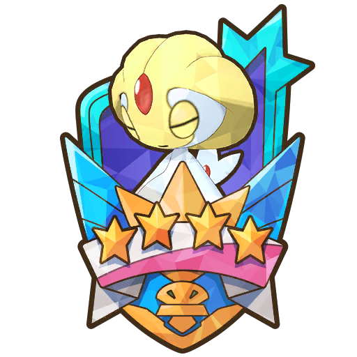

Uxie
Consejos para vencer
En la barra de PS 1, Uxie recibe menos daño si no sufre un problema de estado. En la barra de PS 2, Uxie recibe menos daño si no sufre un cambio de estado. En la barra de PS 3, Uxie recibe menos daño si no sufre un problema y un cambio de estado.
Cuando los PS de Uxie bajen a la mitad, en la barra de PS 1 se curará de problemas de estado, en la barra de PS 2 se curará de cambios de estado y en la barra de PS 3 se curará de problema y cambio de estado.
Cada vez que Uxie se cure de un problemas de estado, su resistencia a este aumenta en 1, y cada vez que se cure de un cambio de estado, su resistencia a este aumenta en 3. Al llegar a +10 se vuelve inmune a dicho problema o cambio de estado.
Uxie cuenta desde el principio con: Resistencia Quemadura +7, Resistencia Parálisis +8, Resistencia Veneno +8, Resistencia Confusión +5, Resistencia Ataduras +6 y Resistencia Retroceso +8. Relevo imposible se considera un cambio de estado, pero Uxie ni tiene resistencia, ni se cura y tampoco gana resistencia a él.
Más información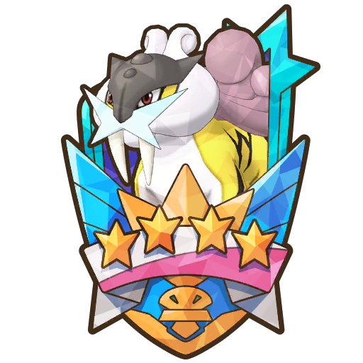
Raikou
Consejos para vencer
Raikou viene acompañado de Ampharos (quien aumenta su Velocidad) y Electrode (quien aumenta la Velocidad de todo el equipo). A patir de la barra de PS 2, los movimientos y movimiento compi de Raikou aumentan su potencia cuanto mayor sea su Velocidad.
En la barra de PS 1 activa Daño especial ↓, en la barra de PS 2 activa Daño físico ↓ y en la barra de PS 3 invocará lluvia al principio y cuando sus PS bajen del 50%. Todos los efectos que active son permanentes.
Más información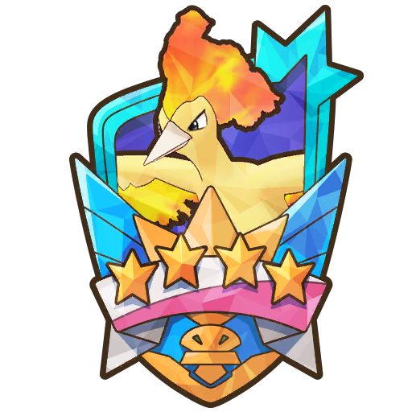
Moltres
Consejos para vencer
Cualquier cambio en el clima, tanto por Moltres como por los Pokémon de tu equipo, es permanente. Moltres cambiará el clima a Soleado al principio de cada barra de PS y, además, en las barras de PS 2 y 3, lo hará cuando sus PS bajen de la mitad.
El sol beneficia mucho a Moltres: aumenta la potencia de sus movimientos, hace que todos sus movimientos acierten e impide reducciones de características y que sufra problemas de estado; y en las barras de PS 2 y 3 hará que Moltres se cure tras cada acción.
Junto a lo antes mencionado, Moltres tiene una ventaja añadida en cada barra de PS cuando el clima es soleado: en la barra de PS 1 reducirá la Defensa de los Pokémon, en la barra de PS 2 siempre causará quemaduras y en la barra de PS 3 reducirá Ataque, Defensa, Ataque Especial, Defensa Especial y Velocidad de los Pokémon.
Es recomendable hacerlo retroceder. Pero, cada vez que se recupera, su resistencia al retroceso aumenta.
Más informaciónCombates
VS. Uxie

Es un combate muy largo, pero Articuno aguanta muchísimo y con su movimiento compi se cura una barbaridad. Acaba rápido con Uxie en la segunda mitad de la barra de PS 2, pues usa Bola Sombra y Articuno es débil al tipo Fantasma.
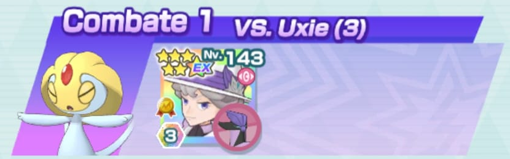
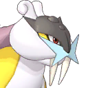
VS. Raikou

Empieza usando Velocidad X EX y después el movimiento de entrenador. Si no recupera PM, reinicia. Ve primero a por Electrode con el movimiento sincro y acaba con él. A continuación, derrota a Ampharos con el movimiento compi. Cuantas más veces hagas retroceder a Raikou más fácil será el combate.
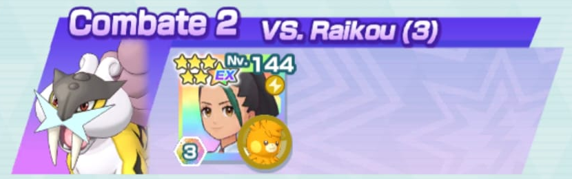
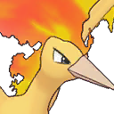
VS. Moltres

Simplemente usa el movimiento de entrenador y los movimientos sincro y compi cuando estén activados. El resto del combate acribilla a Moltres con Cabeza de Hierro.
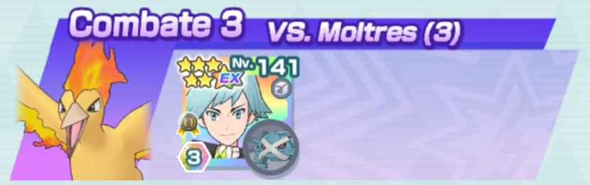
VS. Uxie

La estrategia es igual que con Articuno de Galar: ir pegando y curándose poco a poco. Sin embargo, este combate es más difícil porque dependes de que recuperes Pociones. Si tienes suerte con eso, el combate no debería ser un problema.
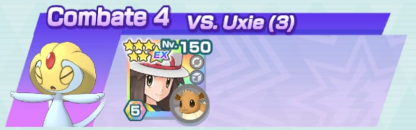
VS. Raikou

Hay que tener muy buen timing para lograrlo. Comienza buffando a Glaceon y usando todo el tiempo Viento Hielo para derrotar a Electrode y Ampharos. Cuando el contador de movimiento compi llegue a 2, se irá el granizo y la Zona Hielo así que vuelve a ponerlos. Reserva el movimiento sincro para la segunda mitad de la barra de PS 2. Pon de nuevo el granizo y la Zona Hielo al comienzo de la barra de PS 3.
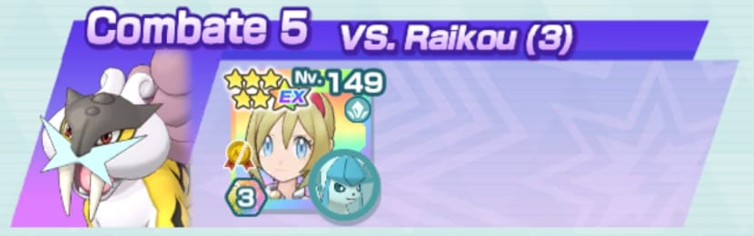
VS. Moltres

Empieza usando Tormenta de Arena, después Bucle Arena y luego el movimiento de entrenador. taca con Terremoto hasta acabar con la barra de PS 1. Pon Tormenta de Arena en cuanto comience la barra de PS 2. Usa una vez más Terremoto para que el movimiento compi fulmine la barra de PS 2. ¡Atención! Antes de que comience la barra de PS 3, Garchomp DEBE atacar primero para garantizar la victoria.
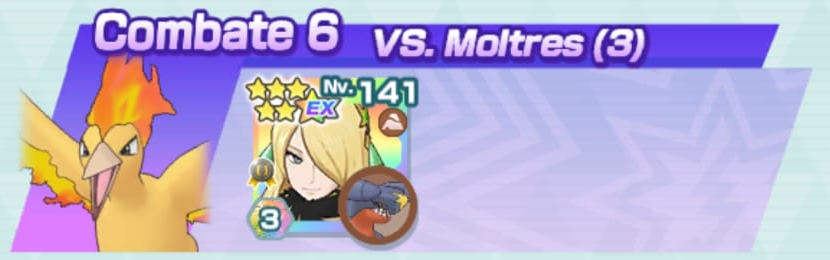
VS. Uxie

El combate es ir alternando entre Meteoimpactos. Ten cuidado al comienzo de la segunda mitad de la barrra de PS 1 porque Uxie atacará con Cola Férrea y se beneficiará de la Zona Acero. Usa una Poción antes de que ataque. Ahora bien, si no recuperas PM, reinicia el combate. No te molestes en continuar porque realmente necesitarás un buen suministro de Pociones.
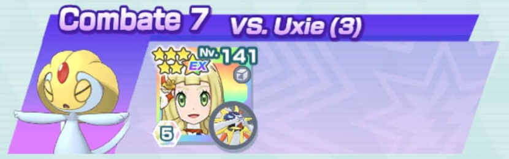
VS. Raikou

Derrota a Electrode a base de Hoja Aguda. A continuación, ataca a Raikou hasta cargar el movimiento compi para poder usarlo contra Ampharos y derrotarlo. Reserva el movimiento sincro para el inicio de las barras de PS 2 y 3. Usa Síntesis en los momentos oportunos y reza para que recupere PM en alguna ocasión. Si tienes el timing en la barra de PS 3 para usar el movimiento compi tras usar el movimiento sincro, la victoria será tuya.
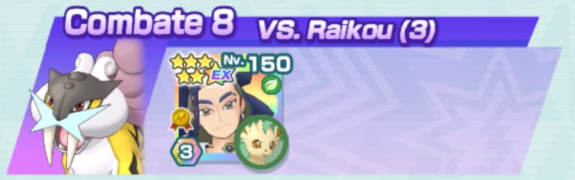
VS. Moltres

Hay que tener mucha, pero que MUCHA suerte haciendo retroceder a Moltres. Y siempre atacando antes de que lo haga él. Como en el primer turno Moltres intentará usar Malicioso pero Glimmora tiene Inmunidad Características ↓ puedes aprovechar para usar el movimiento de entrenador y que el primer Avalancha sea más poderoso.
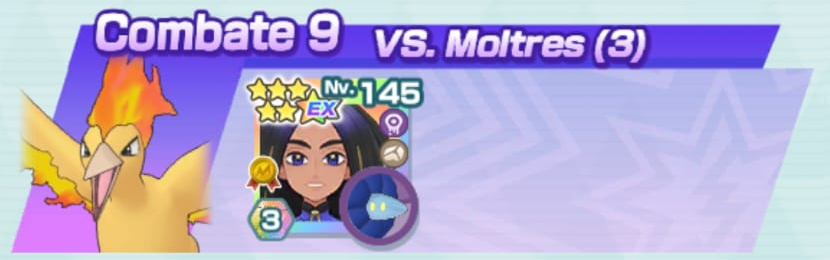
VS. Uxie

Recomendable esperar a recuperar PM en cada orden. Reserva el movimiento sincro para el comienzo de la barra de PS 3. Es un combate largo, pero Clodsire aguanta bien los golpes.
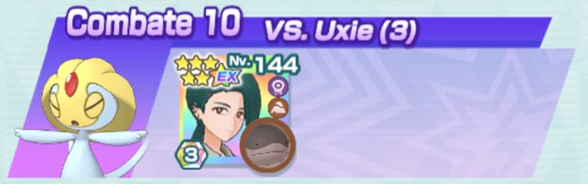
VS. Raikou

Carga el movimiento compi usando repetidamente Hoja Afilada y una vez el movimiento de entrenador para activar la regeneración de PS. Ataca con el movimiento sincro hasta que desaparezca el Campo de Hierba. Usa el movimiento dinamax cerca de la mitad de la barra de PS 2. Usa las minipociones cuando te veas en un aprieto y el otro uso del movimiento de entrenador cuando pierda la reneración de PS.
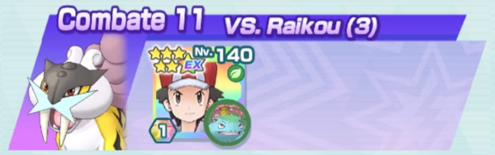
VS. Moltres
 Bel (NC)
Bel (NC)
Inicia con Danza Lluvia para que Virizion pueda bajar las caracteísticas de Moltres. Ataca constantemente con Virizion para intentar que Moltres retroceda y no ataque. Si puedes usar el movimiento compi, ataca con Virizion al menos hasta que Moltres retroceda y puedas usarlo tranquilamente. Puedes intercalar ataques con Quaxly para que se vaya curando si recibe daño. Reserva el otro Danza Lluvia y el movimiento sincro de Virizion para la barra de PS 3. Quaxly tiene Inmunidad Quemaduras como habilidad fortuita.
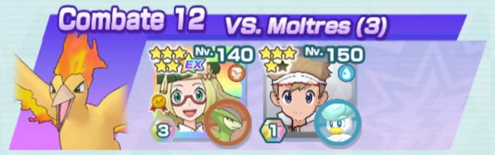
VS. Uxie

Reduce el contador de movimiento compi con Impactrueno y aprovecha para paralizarlo. Usa el movimiento de entrenador justo antes del movimiento compi. Si se cura la parálisis, vuelve a usar Impactrueno y entonces ataca con el movimiento sincro. Ejecuta el movimiento sincro en la segunda mitad de la barra de PS 3.
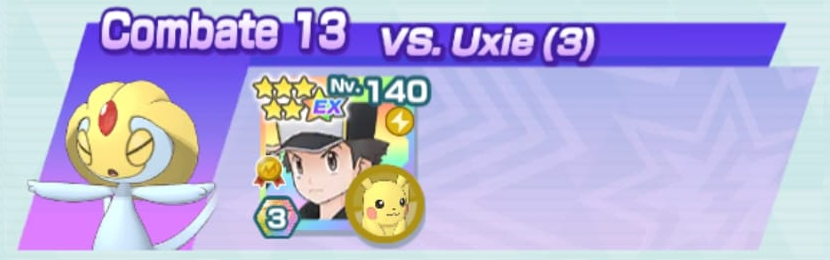
VS. Raikou

Acaba con Electrode y Ampharos con Ventisca y luego mantén congelado a Raikou con el movimiento sincro. No uses el movimiento compi hasta la barra de PS 2 para poder seguir usando el movimiento sincro. Al inicio de las barras de PS 2 y 3 puedes usar un Rayo Hielo extra antes de que se bloquee el movimiento para congelar a Raikou. Usa Protección al inicio de la barra de PS 3.
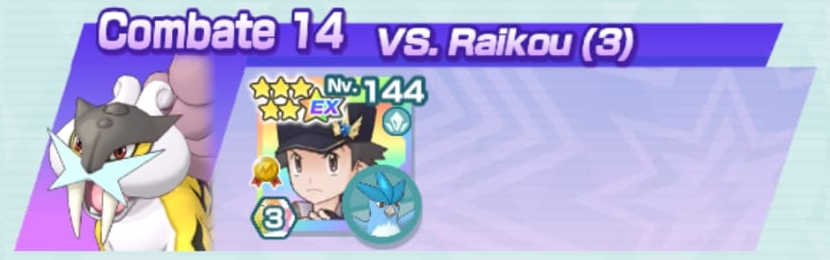
VS. Moltres
La casilla Acción Cielo Despejado +9 de Rayquaza elimina el clima cuando ataca. El primer movimiento compi debe ejecutarlo Rayquaza para megaevolucionar. Los demás lo hará Psyduck para ir curando al equipo. Intenta que Misty recupere PM con su movimiento de entrenador.
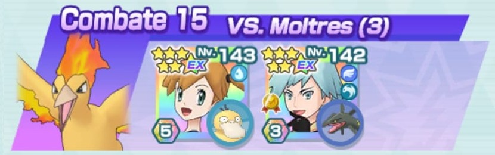
VS. Uxie

Usa el movimiento de entrenador de ambas y, si quieres el máximo potencial, reinicia en caso de que Aurora no recupere PM. Paraliza con Lengüetazo durante la barra de PS 1. Todos los movimientos compi los hará Virizion, pues Mega-Gengar pierde Lengüetazo. La barra de PS 2 se hace un poco cuesta arriba. Al inicio de la barra de PS 3, vuelve a paralizar a Uxie y entonces usa el movimiento compi de Gengar.
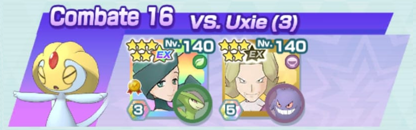
VS. Raikou
Comienza con el movimiento de entrenador y luego pon Zona Tierra. Acaba con Electrode y Ampharos con Terremoto y continúa para dañar a Raikou. Pon de nuevo Zona Tierra con el contador a 2 para llegar al movimiento compi. Usa el movimiento sincro al inicio de la barra de PS 2 y 3. Deberían fulminar a Raikou. Ten cuidado con este movimiento, pues debes ejecutarlo antes que Raikou o acabará contigo.
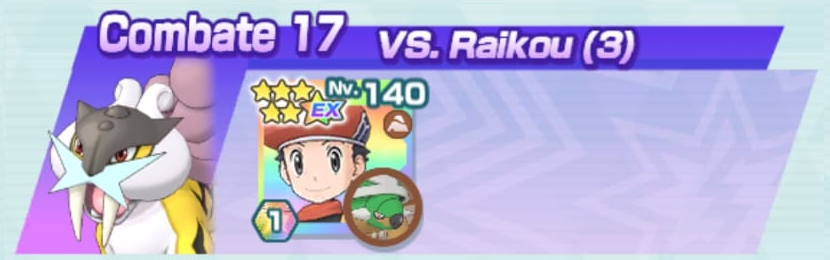
VS. Moltres

Reinicia si Palossand no recupera PM en Tormenta de Arena y el movimiento de entrenador. Intenta usar Defensa X cuando buenamente pueda. Los dos primeros movimientos compi que los haga Zarala. En las barras de PS 2 y 3 procura que Kukui use su movimiento compi cuando Moltres esté al 60% de PS aproximadamente.
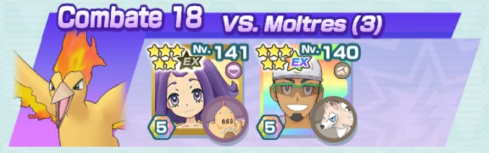
VS. Uxie

Intenta paralizar con Golpe Cuerpo de Snorlax antes de ponerte a atacar con Decidueye. En la barra de PS 2, mantén en relevo imposible a Uxie. Entretanto, Rojo usará su movimiento de entrenador en Decidueye para aumentar la potencia de Puntada Sombría. La barra de PS 3 es más de lo mismo pero, si logras paralizar a Uxie una vez más, mejor.
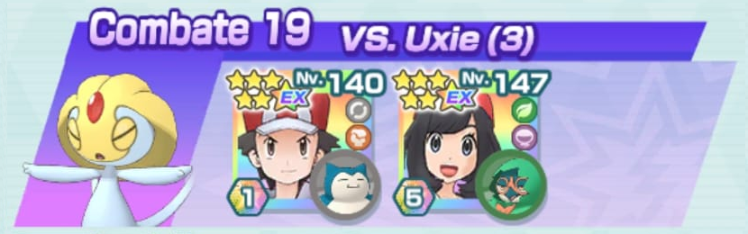
VS. Raikou


Cuando ambos se bufen, destroza de un Megapatada primero a Ampharos y luego a Electrode para no darles oportunidad a atacar. Usa Maxitemblor contra Raikou en la barra de PS 2.
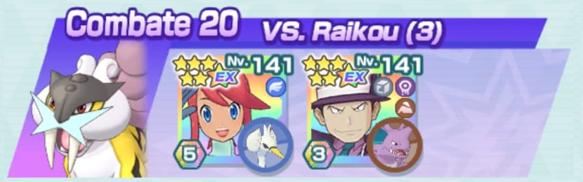
VS. Moltres

Empieza con Pisotón para hacer retroceder a Moltres y evitar que use Malicioso. De no hacerlo, sería preferible reiniciar el combate. Ambos se van curando con el sol y con la regeneración de PS. Leafeon hace mucho daño con el sol.
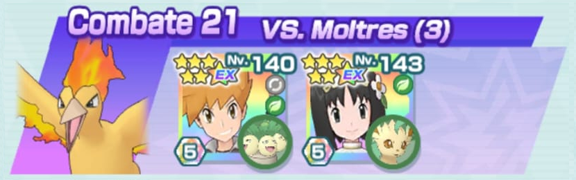
VS. Uxie


Naboru le da a Oricorio justo lo que necesita: aumentos en Ataque Especial y Crítico. Quema con Ascuas en las barras de PS 1 y 3 y pon ataduras con Giro Fuego en las barras de PS 2 y 3. Al final del combate se vuelve inmune a las ataduras así que confunde con Danza Caos de Oricorio. Oricorio tanqueará ya que puede curarse con el movimiento compi.
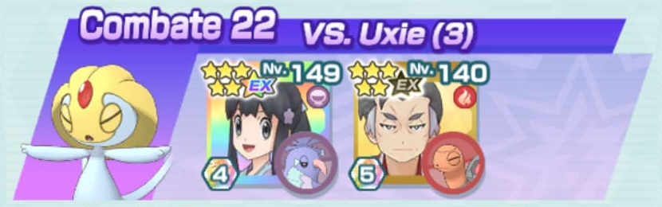
VS. Raikou

Lo más coñazo es esperar a que Carola recupere PM en su movimiento de entrenador y Serra en Velocidad X Múltiple. Tras eso es usar Terratemblor y Alarido constantemente. Usa el primer movimiento compi en Electrode, Ampharos caerá tras usar Terratemblor. Pon Zona Tierra cuando vayas a usar el movimiento compi contra Raikou. Si Umbreon flaquea, usa el movimiento de entrenador de Serra en él.
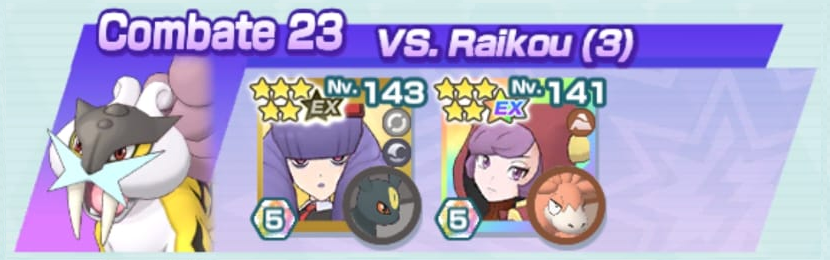
VS. Moltres

Guarda el movimiento de entrenador de Sémola hasta la barra de PS 2 y protegerte de las quemaduras. Moltres de Galar hace bastante daño y hace retroceder casi siempre, así que se come al otro Moltres.
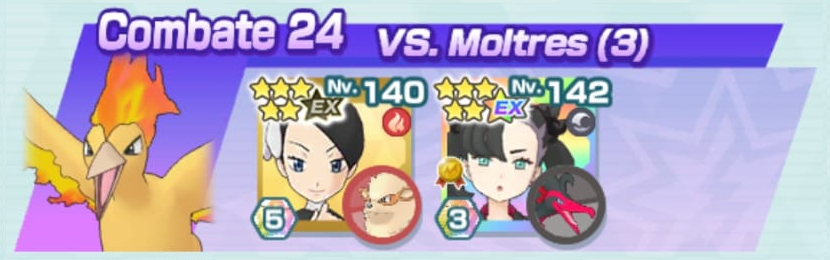
VS. Uxie

Mínimo que Agnès recupere PM en su movimiento de entrenador, pero el de Malta también es buena idea recuperarlo para aumentar las defensas del equipo. Paraliza con Lengüetazo en la barras de PS 1 y 3 y pon ataduras con Torbellino en la barras de PS 2 y 3. Usa el movimiento compi de Wailord si necesitas curar o el de Haunter para hacer más daño.
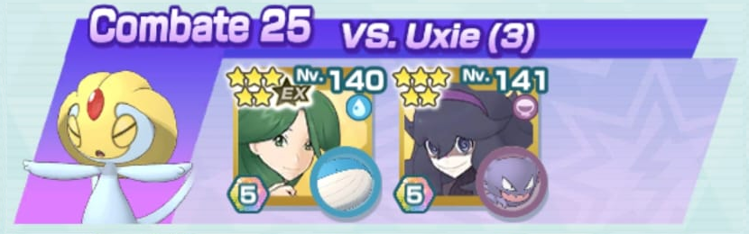
VS. Raikou
Usa una vez el movimiento de entrenador de Yakón. Las demás órdenes sí puedes usarlas todas. Empieza usando el movimiento compi de Seismitoad contra Electrode y Ampharos. No uses el de Persian hasta que ambos hayan perdido la regeneración de PS. Ataca con Mordisco de Persian por si tienes suerte de hacer retroceder. Si puedes usar el movimiento compi de Seismitoad al inicio de la barra de PS 3, guárdalo.
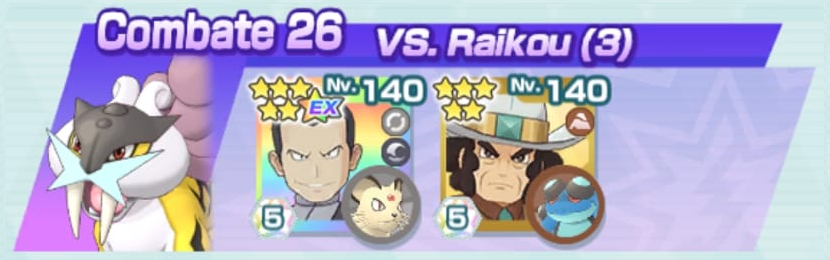
VS. Moltres
Inicia cada barra de PS con Danza Lluvia de Suicune. Como debe recuperar PM tras usar su movimiento compi, trata de hacerlo cuando gastes una Minipoción Múltiple por necesidad. Usa las órdenes de las entrenadoras tras la lluvia. Drednaw debe mantenerse en Relevo Imposible todo lo que pueda. En las barras de PS 2 y 3 vigila que los movimientos de Drednaw no hacen reducir los PS de Moltres por debajo de la mitad para que no invoque el sol. Reduce los PS poco a poco y con un movimiento compi de Drednaw acabarás con cada una de las barras.
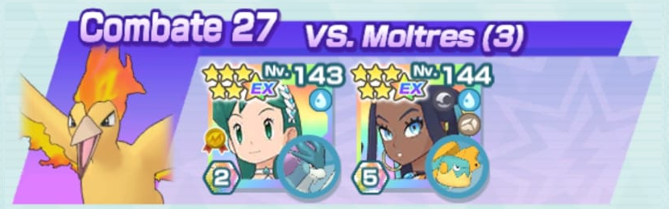
VS. Uxie
Una vez se bufe Dirfblim (con recuperar 1 PM del movimiento de entrenador es suficiente), Tangela envenenará a Uxie en las barras de PS 1 y 3 y pondrá ataduras en las barras de PS 2 y 3. Drifblim atacará con Golpe Umbrío para destrozar a Uxie y, si tiene suerte, hasta puede curarse al evitar sus movimientos.
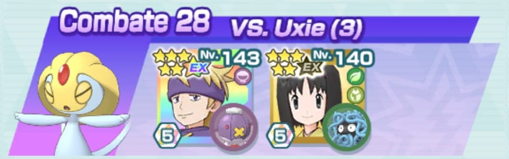
VS. Raikou


Tras aumentar las defensas del equipo con Magneton, usa todo el tiempo Chirrido para llenar la barra de movimientos y hacer que Mil Temblores de Zygarde haga más daño. Comienza aumentando el crítico de Zygarde antes de usar el movimiento de entrenador para aprovechar la regeneración de PS. Cuando Zygarde use el movimiento compi, pon el combate a velocidad normal para que te dé tiempo a usar Mil Temblores antes de que se acitve Vínculo Llenabarras +6.
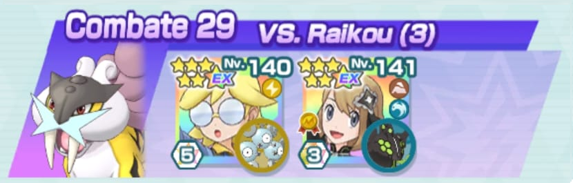
VS. Moltres

Usa Danza Lluvia en las barras de PS 1 y 3. Espera a usar Protección Oceánica cuando comience la barra de PS 2. Usa todo el rato el movimiento compi con Tapu Lele. Intenta que Moltres esté siempre bajo ataduras para que Suicune haga más daño y reza para que el movimiento sincro lo haga retroceder. La barra de PS 3 es crucial, pues puede tirarte todo el combate por la borda.
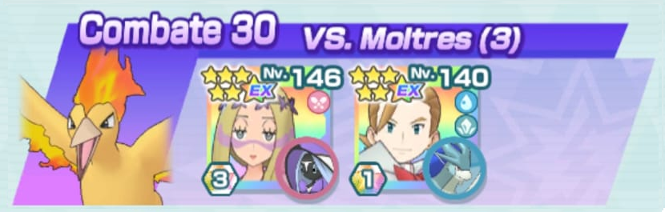
VS. Uxie


Envenena con Bomba Lodo en las barras de PS 1 y 3. Pon relevo imposible con el movimiento dinamax en la barra de PS 2 y con el movimiento compi de Gengar en la barra de PS 3. Si al principio del combate ves que el equipo puede aguantar, comienza usando el movimiento compi de Gengar para aumentar el daño al dejar a Uxie con relevo imposible.
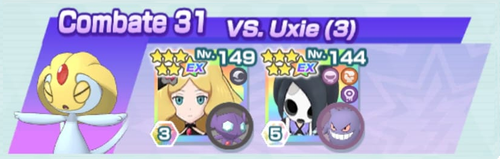
VS. Raikou

Tras usar los bufos de Petra, el combate consiste en poner ataduras y usar el movimiento sincro repetidamente. Cuando veas que el equipo flaquea, usa el movimiento compi de Clefairy para curarlos o Precisión X Múltiple para recuperar unos pocos PS de Clefairy. Usa el movimiento compi de Runerigus si ves la oportunidad de acabar el combate.
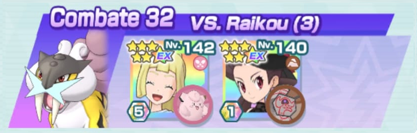
VS. Moltres

Este combate es ver quién tiene más suerte: Moltres o tú. Debes mantener a Moltres retrocediendo el máximo tiempo posible con Al Ataque y Corte Furia. A la primera vez que retroceda, aumenta el Ataque de Pinsir y usa el movimiento de entrenador de Alecrán. No te molestes en esperar si recupera PM, pero si lo hace, mejor. Usa el primer movimiento compi con Pinsir y el resto con Vespiquen, pues debe mantener el incremento de daño de Corte Furia. Usa de nuevo el movimiento compi de Pinsir si ves que puedes acabar el combate. Cada vez que retroceda Moltres, aprovecha para subir las defensas del equipo. Cúrate cuando te veas en apuros.
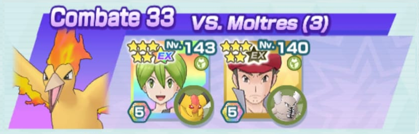
VS. Uxie

Rayo Umbrío de Lunala ignora las pasivas de Uxie así que hace un daño descomunal. Lunatone está para usar el movimiento compi e ir curando al equipo para dar un poco más de aguante El equipo flaquea en velocidad y el combate puede hacerse lento, pero es viable.
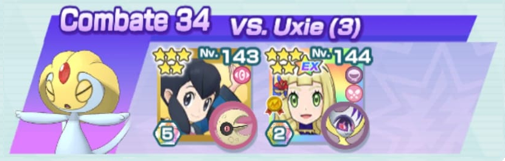
VS. Raikou

Giovanni refuerza la Defensa del equipo y maximiza el crítico de Garchomp. Además, Gioavnni cuenta con Pociones para aumentar la durabilidad de Garchomp. Nidorino tiene regeneración de PS y Apuro Curativo por lo que puede aguantar por su cuenta. Por su parte, Garchomp solo debe bufarse, usar Terremoto y el movimiento compi.
VS. Moltres


Usa el sol de Moltres en tu favor. Preferiblemente que Morti recupere PM en su movimiento de entrenador antes que Plata. Y si recupera varias veces, mejor para aumentar las defensas del equipo. Cada acción del Ho-Oh de Morti cura al equipo y, en caso de apuro, cuenta con Pociones. El Ho-Oh de Plata debe atacar con Rayo Solar debido a que Moltres tiene Mitiga Fuego. Pero la clave está en su movimiento compi con el que hace muchísimo daño.
VS. Uxie


Cuantos más PM recupere el movimiento entrenador de Marcial mejor. Hariyama ayuda bastante a Kyurem al poder bajar la Defensa de Uxie y usar Pociones en momentos de apuro. En cuanto a Kyurem, solo debe usar Rayo Gélido, su movimiento sincro y su movimiento compi. En algún momento Kyurem puede usar Rayo Hielo: si está cerca de poder usar el movimiento compi o si alguna de las barras de PS de Uxie está bajo mínimos.
VS. Raikou


Debes reiniciar si Fredo no recupera PM en Directo. Tras usar los bufos del equipo, Dewgong atacará con Viento Hielo para derrotar a Electrode y Ampharos y bajar la Velocidad de Raikou. Cuando lo haya logrado, comenzará a atacar con Rayo Hielo. Vigila los PS de Dewgong ya que es débil al tipo Eléctrico. Usa el movimiento de entrenador de Meridia en Dewgong cuando esté en apuros. Además, Regice será quien use siempre el movimiento compi para ir curando al equipo. El combate se hace un poco lento al principio, pero cuando ganen Velocidad se hace más llevadero.
VS. Moltres


Reinicia si Roco no recupera PM en Ataque X. Intenta que el equipo sobreviva la barra de PS 1 sin usar el movimiento compi de Zapdos. Cuando haya usado las dos veces el movimiento sincro entonces sí. Rampardos podrá usar Testarazo sin apenas problemas en la barra de PS 1. Usa Antiaéreo para que vaya recuperando PS con la regeneración. En la barra de PS 3 usa Testarazo con expectativas de inmolarte y llevarte a Moltres contigo.
VS. Uxie

No es realmente necesario que recuperen PM en sus movimientos de entrenador, pero por si acaso. Paraliza a Uxie en las barras de PS 1 y 3 y pon ataduras en las barras de PS 2 y 3. Baja el Ataque Especial de Uxie con Estoicismo de Masquerain y baja el Ataque con Encanto de Jirachi.
VS. Raikou


Si Jugador recupera PM en su movimiento de entrenador, guay. Pero no es muy necesario. Usa el primer movimiento sincro de Magearna antes de usar su movimiento compi por primera vez y en la barra de PS 3. Alcreamie debe usar todo el tiempo Placaje contra Raikou para intentar bajar su Velocidad.
VS. Moltres
Es horrible tener que esperar a que Aura recupere PM en Danza Lluvia y su movimiento de entrenador. Pero debe hacerlo. Ten cuidado al cambiar de barra de PS, debes meter de nuevo la lluvia antes de que Moltres ataque. En las barras de PS 2 y 3 no uses el movimiento compi de Swampert hasta que los PS de Moltres no estén cerca del 50%. Vaporeon puede usar Protección en la barra de PS 3 al inicio de esta o para protegerse de Envite Ígneo (lo usa después de Ala de Acero).
VS. Uxie

Es recomendable que Dracón recupere PM en ambas órdenes porque Salamence puede resultar un poco frágil. Paraliza con Dragoaliento en las barras de PS 1 y 3 y pon ataduras con Torbellino en las barras de PS 2 y 3. Usa el primer movimiento compi de Salamence para darle regeneración de PS y úsalo cuando veas que perdió el efecto.
VS. Raikou


Alterna el movimiento de entrenador de Lem con Bofetón Lodo hacia Raikou para ir bajándole la Precisión y aumentando el Ataque Especial de Heliolisk. Cuando esté al máximo, comienza a atacar con Electrotela para bajar su Velocidad. Mientras, Gastrodon atacará con Terremoto para hacer daño e ir derrotando a Electrode y Ampharos. Usa el primer movimiento compi con Gastrodon, y siempre que lo paralicen para que se cure. Si Gastrodon cae en la barra de PS 3, Heliolisk puede intentar aguantar gracias al sustain que le da Carga Parábola.
VS. Moltres


Comienza el combate usando Impresionar. Si Moltres no retrocede, reinicia. Usa el movimiento de entrenador de Morti siempre que Moltres esté retrocediendo. Usa el primer movimiento compi con Mismagius para aprovechar el boost por ser apoyo EX. Siempre que uses un movimiento compi, deja a Moltres antes retrocediendo. Depende mucho de que retroceda Moltres y de que este no haga golpes críticos.
VS. Uxie
Envenena a Uxie en las barras de PS 1 y 3. No uses el movimiento sincro de Melenaleteo hasta la barra de PS 2; la reducción de resiliencia actúa como un cambio de estado. Puedes usar primero el movimiento compi de Nidorino para tener el boost por ser apoyo EX.
VS. Raikou

Comienza con el movimiento de entrenador de Elio y Directo+ de Magno. Luego duerme a Ampharos antes de que baje la Velocidad de tu equipo. Primarina va a estar intentando dormir todo el tiempo para que tu equipo no sufra daño mientras Groudon ataca con Filo del Abismo.
VS. Moltres

Si Azul puede recuperar PM en ambas órdenes mejor. Vaporeon usará primero el movimiento compi antes que Blastoise para poner lluvia. Siempre que se vaya a cambiar de barra de PS, prepara a Vaporeon para usar su movimiento compi e impedir que salga el sol. En la barra de PS 2 Vaporeon puede quitar más de la mitad de los PS de Moltres si el movimiento compi resulta ser crítico, pero en la barra de PS 3 quizás debas ir con más cuidado. Usa Llanto Falso si fuera necesario para bajar el contador sin hacer daño a Moltres.
VS. Uxie


Usa el movimiento de entrenador de Blasco cada vez que Delcatty no tenga regeneración de PS. Puede venir bien quemar a Uxie para mermar su Ataque, pero Dragpult puede pegar sin problemas gracias a su pasiva Ataque Perforante. Al principio puede ser mejor el movimiento sincro porque consume menos barras pero, conforme Delcatty vaya aumentando la Velocidad del equipo, Dracoflechas será más viable.
VS. Raikou


Mínimo Roxy debe recuperar una vez PM en su movimiento de entrenador y usarlo las tres veces en Incineroar. Si recupera más, úsalo en Scrafty. Usa el primer movimiento compi con Scrafty para volver a poner la Zona Siniestra. Incineroar usará Giro Vil hasta derrotar a Electrode y Ampharos. Si la barra de movimientos se lo permite, usa Lariat Oscuro para acabar con Raikou.
VS. Moltres

Reinicia si Gaia no recupera PM en su movimiento de entrenador. Usa todo el tiempo Bucle Arena contra Moltres para bajar su Ataque. Diancie debe empezar atacando con Tumba Rocas hasta usar su movimiento compi para poner Zona Roca y poder usar su movimiento sincro. Pon Tormenta de Arena cada vez que cambie la barra de PS y ten cuidado cuando los PS de Moltres bajen a la mitad en las barras de PS 2 y 3. Usa el movimiento de entrenador de Dianta cuando Diancie tenga su Defensa al máximo para tener también la Defensa Especial a +6.
VS. Uxie


Camus puede aumentar la probabilidad de asestar golpes críticos y el Ataque de Zekrom. Además cuenta con pociones en caso de apuro. Puede venir bien usar el primer movimiento compi con Togepi para activar la aceleración de la barra de movimientos. Como Zekrom tiene Ataque Perforante puede golpear con Ataque Fulgor sin preocuparse demasiado.
VS. Raikou
 Espeon
Espeon
Reduce el contador con las órdenes y, justo antes de que Necrozma use su movimiento compi, Espeon debe usar Campo Psíquico. Intenta atacar con Láser Prisma lo más rápido que puedas antes de que Raikou lo haga. Cuando veas que el Campo Psíquico va a desaparecer, vuelve a ponerlo antes de que Espeon caiga. Si puedes empezar la barra de PS 3 atacando con el movimiento compi de Necrozma mejor. Espeon tiene Inmunidad Golpes Críticos como habilidad fortuita.
VS. Moltres


La barra de PS 1 es rápida porque Tyrantrum destroza a Moltres con Testarazo. Usa todo el tiempo Golpe Cabeza con Bouffalant para intentar que Moltres retroceda. En la barra de PS 2 hay que ir con cuidado: empieza con Vasta Guardia de Araquanid para bloquear Onda Ígnea de Moltres. Si tienes suerte de que recupere PM y Bouffalant le haga retroceder, usa Vasta Guardia de nuevo para bloquear Aire Afilado. Si no lo consigues y Tyrantrum se quema, que no ataque hasta la barra de PS 3.
VS. Uxie


Usa Directo de Lira y las órdenes de Erika. Paraliza a Uxie y entonces usa el movimiento compi de Meganium. A continuación, usa el movimiento de entrenador de Lira. Si no recupera PM, reinicia. Usa siempre el movimiento compi con Meganium para tener el sol siempre en combate y que ambas se vayan curando. La barra de PS 2 y la segunda mitad de la barra de PS 3 se hace un poco pesada al no poder poner problemas ni cambios de estado, pero Vileplume y Meganium aguantan sobradamente.
VS. Raikou


No es necesarrio que Judith use Velocidad X, salvo si no tiene barras para atacar. Al principio del combate, Cobalion bajará la Defensa de Raikou. Mientras, Sirfetch'd se quitará de en medio a Electrode y luego a Ampharos. Intenta que Cobalion aguante lo máximo posible y Sirfetch'd tenga suficientes PS, pues en la barra de PS 3 se puede ver solo ante Raikou.
VS. Moltres

Intenta retroceder con Cascada nada más empezar para evitar que Moltres use Malicioso. Recomiendo reiniciar si no lo consigue. Tras eso, pon lluvia y comienza a bufar. Ataca con Acua Jet de Floatzel para bajar las características de Moltres. Intenta comenzar la barra de PS 2 usando el movimiento compi de Floatzel; seguro que fulmina a Moltres. Floatzel tiene mucho daño, me ha sorprendido muy gratamente. Gyarados tiene Acción Veloz +2 como habilidad fortuita.
VS. Uxie


Reduce primero la ofensiva de Uxie con Rugido de Guerra. Cuando use Brillo Mágico y dañe al equipo, usa el movimeinto de entrenador de Cheren para dar regeneración a ambos. Cuando la barra de movimientos se resienta, usa el movimiento de entrenador de N. Mantén en pie todo el tiempo que puedas a Stoutland. En la barra de PS 2 no usarás ningún movimiento compi para poder rematar con él en la barra de PS 3.
VS. Raikou


Comienza reduciendo la ofensiva de Raikou mientras Maya usa las órdenes. Cuando Raikou esté al mínimo, usa el movimiento de entrenador de Ghechis. Usa los primeros movimientos compi con Kyurem. Usa el de Wormadam cuando pierda la regeneración de PS para volver a conseguirla.
VS. Moltres


Comienza haciendo retroceder a Moltres atacando con Conkeldurr y con Avalancha de Tyranitar. Reinicia si no lo logras. Entre Conkeldurr y Tyranitar puedes frenar a Moltres y hacer daño, mientras que Xerneas tanquea y se cura. En la barra de PS 2 Xerneas y Conkeldurr se quemarán, pero no te preocupes. Xerneas se cura más de lo que se daña y Conkeldurr se beneficia al sufrir problemas de estado. Usa al principio un par de movimientos compi con Xerneas para mejorar la Defensa Especial y la Velocidad del equipo. En la barra de PS 1 y 3 úsalo con Tyranitar y en la barra de PS 2 con Conkeldurr.
VS. Uxie

Usa Especial X de Fantina mientras Roserade paraliza a Uxie y aumenta el crítico del equipo con cada ataque suyo. Reserva el movimiento de entrenador de Israel para el inicio de las barras de PS 2 y 3 y así proteger a Mismagius de los golpes críticos de Uxie. En la medida de lo posible, intenta que Mismagius ataque cuanto más llena esté la barra de movimientos.
VS. Raikou


Tras usar las órdenes, Flareon irá atacando con Nitrocarga a Raikou para comenzar a bajar su velocidad mientras Silvally derrota a Electrode y Ampharos. Usa el primer movimiento compi con Flareon para dar regeneración de PS al equipo. Luego es usar todo el tiempo Multiataque para ir acabando con Raikou.
VS. Moltres

Mientras Kyogre y Vaporeon se bufan, Registeel irá atacando para aumentar la Velocidad del equipo. Pon Danza Lluvia al inicio de la barra de PS 1 con la pasiva de Kyogre y en las barras de PS 2 y 3 con Danza Lluvia de Vaporeon. Como el daño de Kyogre no será suficiente, a mitad de las barras de PS 2 y 3 volverá el sol así que ve con cudiado. Administra bien las Pociones. Vaporeon tiene Entrada Robusta Regenerativa como habildiad fortuita.
VS. Uxie

Marowak ayuda a Solgaleo aumentando su Velocidad y reduciendo la Defensa de Uxie. Además, Kiawe cuenta con Pociones para ir curando. Solgaleo debe limitarse a usar Meteoimpacto ya que ignora las pasivas de Uxie.
VS. Raikou


Intenta que Eva recupere PM una vez en su movimiento de entrenador. Después, aumenta la Evasión de Eevee al máximo. Mientras, Aloe aumentará la Defensa Especial del equipo y Watchog bajará las defensas de los enemigos. Requiere suerte para que Eevee esquive los ataques y se cure debido a los fallos, pero Aloe puede echar una mano curando a todo el equipo.
VS. Moltres

El inicio del combate debe ser "Tacháaan", Danza Lluvia y Cascada. Con el movimiento de entrenador de Yasmina evitas que te bajen los stats y con Cascada puedes ganar tiempo si consigues hacerlo retroceder. Bufa a Feraligatr entre retrocesos, ahorrando un movimiento de entrenador de Cristi. Úsalo cerca del cambio de barra de PS. Debes entrar en la barra de PS 2 usando el movimiento compi de Feraligatr para fulminarla de golpe. En la barra de PS 3, vuelve a poner Lluvia y reduce los PS de Moltres con cuidado para usar de nuevo el movimiento compi de Feraligatr cuando Moltres esté cerca del 50% de sus PS. Blastoise tiene Inmunidad Quemaduras como habilidad fortuita.
VS. Uxie

Usa el movimiento de entrenador de Xana junto a Dragoliento de Altaria. A continuación, protege a Chesnaught siempre que Uxie use Poder Oculto (lo hace después de usar Puño Hielo). Reduce todo lo que puedas los stats de Uxie con Dragoaliento y luego cambia a Garra Dragón. Cuando Uxie esté cerca del 50% de PS, usa el movimiento compi de Altaria. Al comenzar la barra de PS 2, Chesnaught podrá atacar con Látigo Cepa para poner ataduras. Cuando Uxie pierda el Velo Sagrado, paralízalo y usa el movimiento compi de Altaria. En la barra de PS 3 lo mismo: poner ataduras, paralizar y esperar a usar el movimiento compi cerca de la mitad de los PS. El combate sería más fácil si Xana recuperase Pociones.